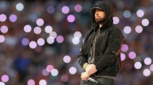

Eminem's Official Site | Merchandise Shop | Discography | About Us | Contact
Eminem's journey into rap began as a teenager when he developed a passion for storytelling and rhyming. He spent years honing his craft in Detroit's underground rap scene, where he adopted the stage name “M&M,” later stylized as Eminem. His big break came in 1999 with the release of The Slim Shady LP, produced by hip-hop legend Dr. Dre. This album introduced Eminem's alter ego, Slim Shady, and became an instant commercial success, winning him a Grammy Award for Best Rap Album. Songs like My Name Is showcased his dark humor and unapologetic style, sparking both praise and controversy.
Following The Slim Shady LP, Eminem released The Marshall Mathers LP in 2000, which shattered records as the fastest-selling solo album in U.S. history at the time. With hits like The Real Slim Shady, Stan, and The Way I Am, the album displayed his lyrical prowess, introspective storytelling, and ability to blend deeply personal experiences with commentary on fame and societal issues. Stan, a track exploring the dangers of obsessive fan culture, is considered one of his greatest works and has become a cultural reference.
In 2002, Eminem released The Eminem Show, which further cemented his reputation as a rap icon. That same year, he starred in 8 Mile, a semi-autobiographical film that chronicled a young rapper's rise in the Detroit battle rap scene. The movie was a commercial success and showcased Eminem's acting talents, earning him an Academy Award for Best Original Song for Lose Yourself, a high-energy anthem about perseverance and self-belief.
Despite his success, Eminem faced personal challenges, including struggles with drug addiction and mental health issues. Following the release of Encore in 2004, he took a hiatus to focus on his recovery. He returned in 2009 with Relapse, an album that documented his battle with addiction, showcasing a darker side of his storytelling as he addressed his time in rehab and his fight to regain control over his life. Although Relapse received mixed reviews, Eminem's dedication to his craft remained evident, and he followed up with Recovery in 2010. Recovery was a commercial success and was praised for its introspective themes, signaling a new chapter in Eminem's life as he embraced sobriety. Tracks like Not Afraid and Love the Way You Lie featuring Rihanna became massive hits, with Love the Way You Lie topping the charts globally and resonating with listeners for its depiction of turbulent relationships.
Eminem's career continued to evolve with the release of The Marshall Mathers LP 2 in 2013, a sequel to his groundbreaking 2000 album. This album showcased his lyrical maturity and nostalgia for his earlier work, blending his classic style with new influences. Songs like Rap God highlighted his technical skill, with Eminem setting a world record for packing the most words into a hit single, further proving his mastery of wordplay and complex rhyme schemes.
Over the next few years, Eminem released Revival in 2017, Kamikaze in 2018, and Music to Be Murdered By in 2020. Each album displayed his ability to adapt to changing musical landscapes while staying true to his style. Kamikaze saw him responding to critics and younger rappers with a renewed aggressiveness, reminding fans of his sharp wit and fearlessness. Music to Be Murdered By, inspired by Alfred Hitchcock, showcased a mix of introspection and societal commentary, tackling themes like mental health, gun violence, and self-reflection.
In addition to his solo work, Eminem has contributed to the music industry through his record label, Shady Records, which he co-founded with his manager Paul Rosenberg. Shady Records has signed and promoted numerous artists, including 50 Cent, Obie Trice, and D12, further expanding Eminem's influence on the hip-hop genre. His label and collaborations have given a platform to rising talents, helping shape the future of rap music.
With over 220 million records sold worldwide, Eminem remains one of the best-selling and most awarded artists of all time, earning 15 Grammy Awards, an Academy Award, and countless accolades. Known for his resilience and raw honesty, Eminem has become a cultural icon, inspiring millions with his story of overcoming adversity and remaining dedicated to his craft. His ability to transform personal pain into art has allowed him to connect with fans on a deep level, making his music a source of empowerment for listeners facing their own challenges.
Eminem's legacy is one of innovation, perseverance, and influence. His journey from Detroit's underground battle rap scene to becoming a global superstar is a testament to his unparalleled talent and drive. As a lyricist, producer, and cultural figure, Eminem's impact on hip-hop and popular culture is indelible. For a deeper exploration of Eminem's extraordinary career, influence, and artistic journey, click here to read his full biography.
 Back to TopEminem's Official Site | Merchandise Shop | Discography | About Us | Contact